Previous Next
Step 1: (22/10/2024
10:36:49)
Clique do usuário com o botão esquerdo do mouse em "SAÍDAS (texto)" em "Shop Control 9"
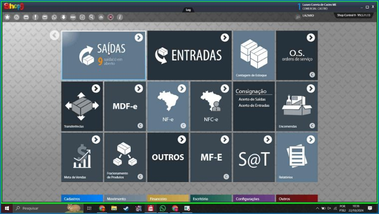Captura de tela da etapa 1.
Previous Next
Step 2: (22/10/2024
10:36:53)
Clique do usuário com o botão esquerdo do mouse em "Entrega (texto)" em "Shop Control 9"
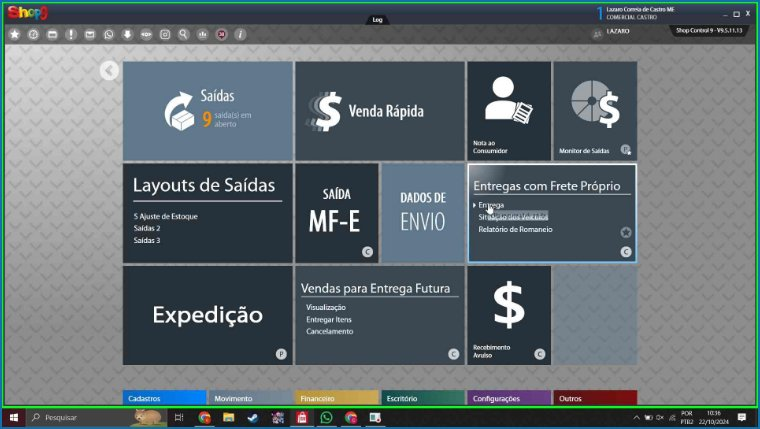Captura de tela da etapa 2.
Previous Next
Step 3: (22/10/2024
10:36:56)
Clique do usuário com o botão esquerdo do mouse em "Entrega - Fretes Próprios (janela)" em
"Entrega -
Fretes Próprios"
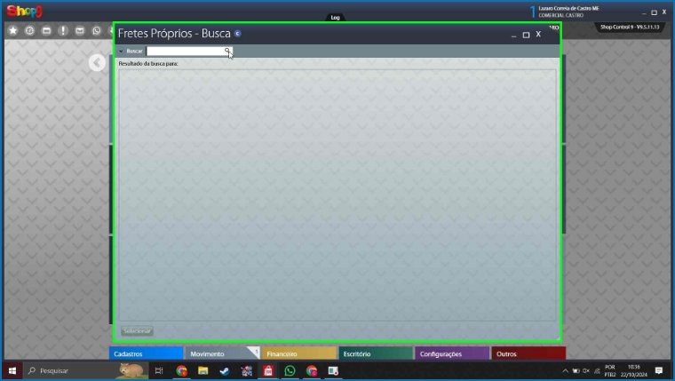Captura de tela da etapa 3.
Previous Next
Step 4: (22/10/2024
10:36:58)
Clique do usuário com o botão esquerdo do mouse em "RETIRADA CLIENTE (texto)" em "Entrega -
Fretes
Próprios"
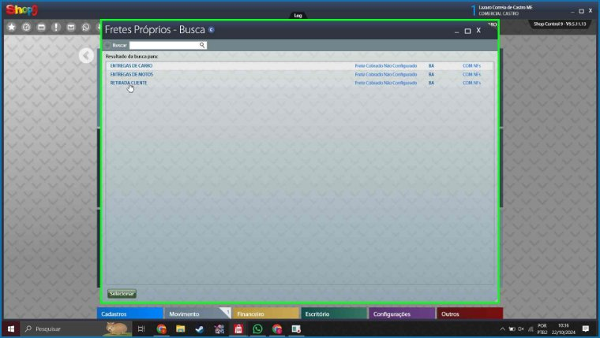Captura de tela da etapa 4.
Previous Next
Step 5: (22/10/2024
10:37:06)
Clique do usuário com o botão esquerdo do mouse em "Selecionar (texto)" em "Entrega - Fretes
Próprios"
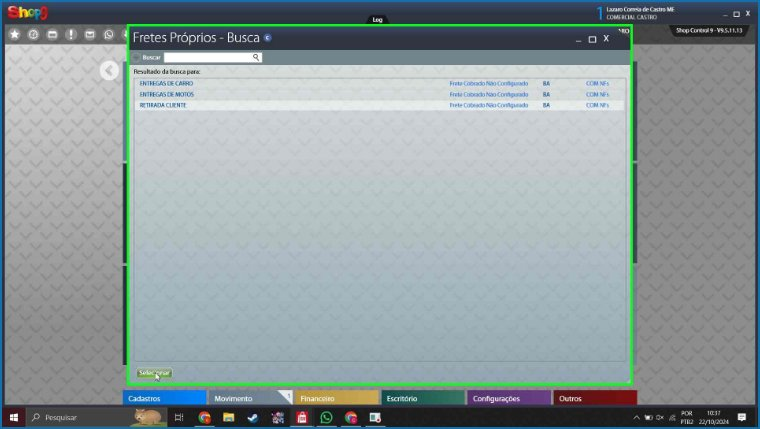Captura de tela da etapa 5.
Previous Next
Step 6: (22/10/2024
10:37:14) Dois
cliques do usuário com o botão esquerdo do mouse em "642731 (botão)" em "Entrega - Fretes
Próprios"
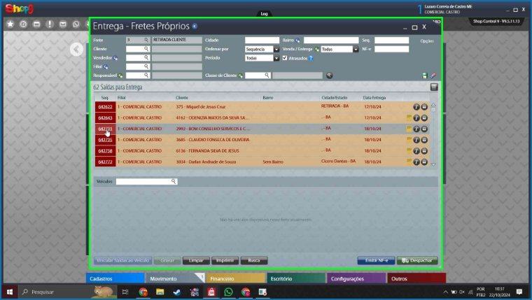Captura de tela da etapa 6.
Previous Next
Step 7: (22/10/2024
10:37:38)
Clique do usuário com o botão esquerdo do mouse em "Saídas (janela)" em "Saídas"
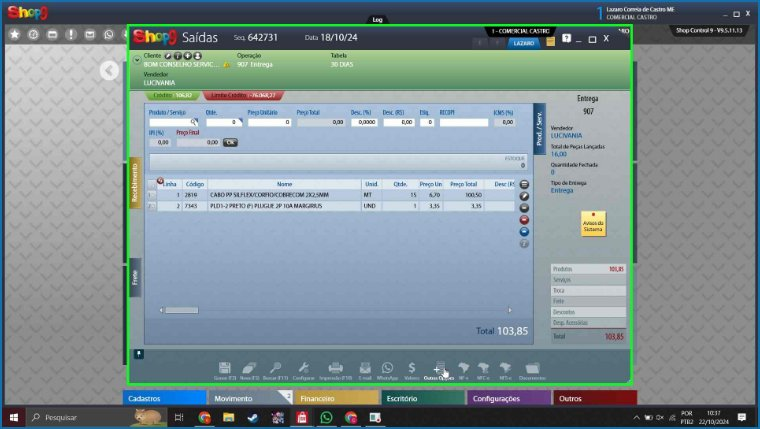Captura de tela da etapa 7.
Previous Next
Step 8: (22/10/2024
10:37:41)
Clique do usuário com o botão esquerdo do mouse em "Entrega Parcial (texto)"
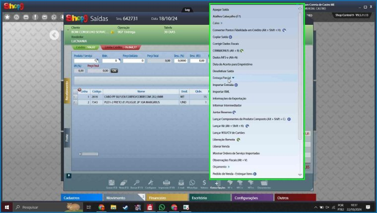Captura de tela da etapa 8.
Previous Next
Step 9: (22/10/2024
10:37:45)
Clique do usuário com o botão esquerdo do mouse em "Retirar Itens na Loja (Alt + Shift + G)
(texto)"
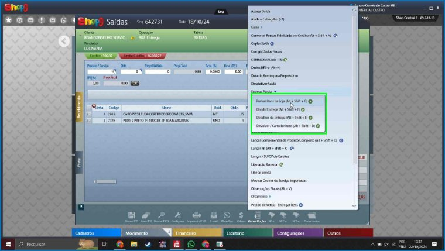Captura de tela da etapa 9.
Previous Next
Step 10: (22/10/2024
10:37:49)
Clique do usuário com o botão esquerdo do mouse em "0,00 (personalizado)" em "Saídas"
Captura de tela da etapa 10.
Previous Next
Step 11: (22/10/2024
10:37:51)
Entrada de teclado do usuário em "Saídas (janela)" em "Saídas" [...]
Captura de tela da etapa 11.
Previous Next
Step 12: (22/10/2024
10:37:58)
Clique do usuário com o botão esquerdo do mouse em "Cancelar (texto)" em "Saídas"
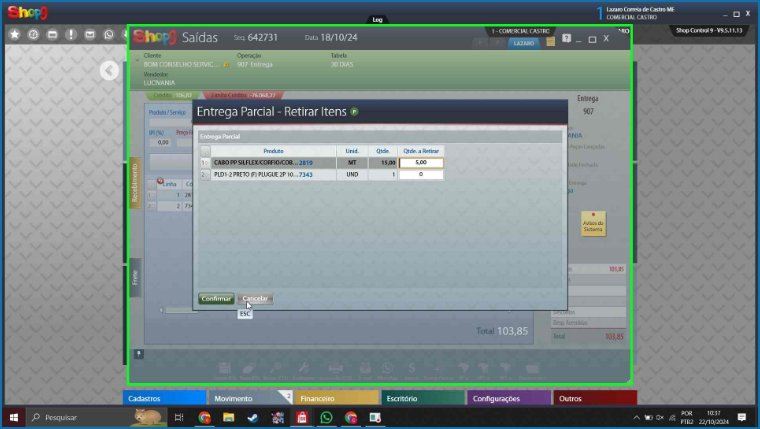Captura de tela da etapa 12.
Previous Next
Step 13: (22/10/2024
10:38:04)
Clique do usuário com o botão esquerdo do mouse em "Gravar (F2) (botão)" em "Saídas"
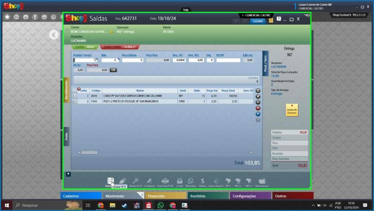Captura de tela da etapa 13.